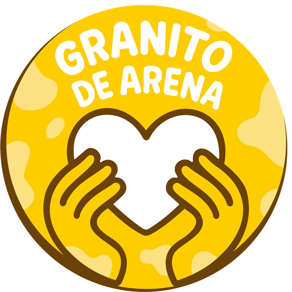
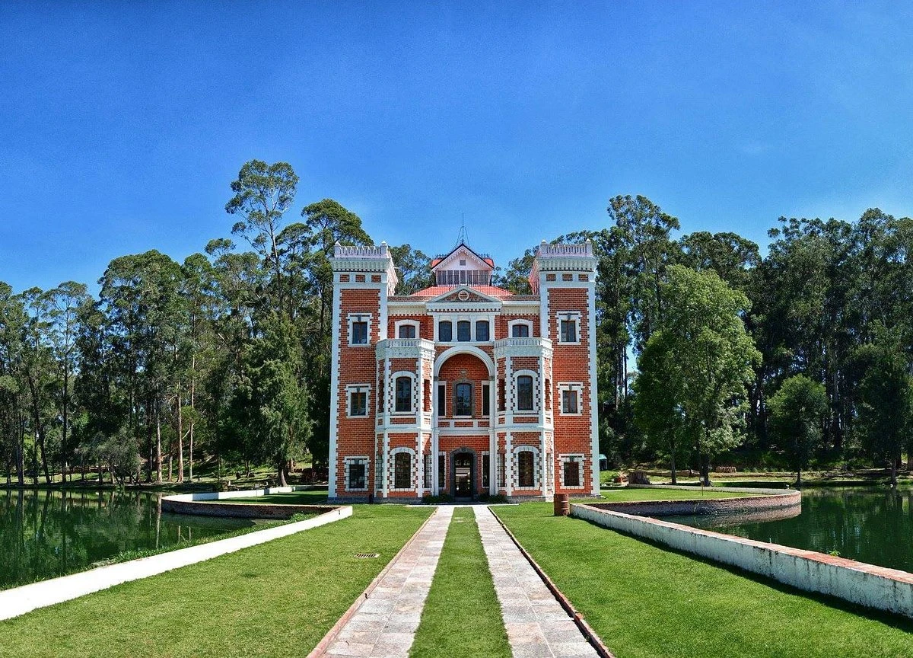

👕
Playera oficial
Diseño HANGUK RUN, tela dry-fit.
3K · 5K · 10K
De aquí para el mundo

Carrera con causa · Granito de ArenaCorre por los 10 jóvenes voluntarios de Granito de Arena que representarán a San Martín Texmelucan en un encuentro internacional de intercambio cultural y liderazgo juvenil en Corea del Sur.
La causa 우리의 목표
Corremos por 10 jóvenes voluntarios de Granito de Arena que dedican su tiempo a proyectos comunitarios y sociales en San Martín Texmelucan, vinculados con la educación, el trabajo digno, la innovación y la construcción de ciudades más sostenibles.
Estos jóvenes representarán a su comunidad en un encuentro internacional de intercambio cultural y liderazgo juvenil en Corea del Sur, donde participantes de distintos países comparten sus proyectos y desarrollan estrategias para el cambio sostenible. Que Puebla tenga voz en ese espacio es mostrar el talento y el trabajo comunitario que nace aquí.
Para la región es una oportunidad de demostrar que las ideas que surgen en nuestras comunidades pueden trascender fronteras, generar vínculos y volver con nuevas herramientas para seguir trabajando en casa. Lo recaudado se destina exclusivamente a cubrir los gastos de representación de la delegación.
Sus proyectos se relacionan con los Objetivos de Desarrollo Sostenible:
Compromisos 약속
Al volver, la delegación compartirá lo aprendido con San Martín Texmelucan y la región.
Talleres gratuitos para jóvenes de la región sobre liderazgo y proyectos comunitarios.
[POR CONFIRMAR: número de talleres, fechas y sede]Una presentación abierta a la comunidad para compartir la experiencia y los aprendizajes del encuentro.
[POR CONFIRMAR: fecha y lugar]Compartir metodologías y contactos con otros colectivos y escuelas de la región.
[POR CONFIRMAR]Un informe público sobre cómo se utilizaron los recursos recaudados.
[POR CONFIRMAR]Organizador 주최
🫀 Visibilizamos, apoyamos y difundimos los derechos humanos y las buenas causas ✨
Granito de Arena es un colectivo ciudadano, apartidista y sin fines de lucro de San Martín Texmelucan, Puebla, dedicado a los derechos humanos, la participación comunitaria y la sensibilización social.
Agenda 일정
Inscripción en línea en esta página.
O antes, si se agotan los lugares.
10:00 a 18:00 h · [POR CONFIRMAR: lugar de entrega]. Presenta tu confirmación e identificación.
Salida 10K a las 7:00, 5K a las 7:15 y 3K a las 7:30. Llega con al menos 45 minutos de anticipación.
La delegación de 10 jóvenes voluntarios representa a San Martín Texmelucan. 감사합니다!
La sede 장소
Sede sujeta a autorización
Corremos entre jardines, árboles y un lago con un castillo de estilo inglés en medio. Uno de los lugares con más historia y belleza de Puebla.
ℹ️ Llega con al menos 45 minutos de anticipación. Estacionamiento y transporte: [POR CONFIRMAR].

Recorrido 코스
Lo que recibes 기념품
Diseño HANGUK RUN, tela dry-fit.
El número que tú elijas, con tu nombre en español y en hangul.
Diseño coreano para todos los que crucen la meta.
Hidratación y un antojo coreano en la meta.
Reconocimientos 시상
Premios en efectivo para los tres primeros lugares de cada distancia, en rama varonil y femenil.
Ruta Busan · por rama (varonil y femenil)
Ruta Seúl · por rama (varonil y femenil)
Ruta Jeju · por rama (varonil y femenil)
Cualquier distancia · hanbok, K-pop, K-drama… ¡sorpréndenos!
Premios por anunciar
¿Tu marca quiere patrocinar este premio? Escríbenos
Los premios de 3K, 5K y 10K se entregan únicamente en efectivo, presentando identificación oficial.
Gracias a 후원
Buscamos empresas, instituciones y aliados socialmente responsables que quieran sumarse a HANGUK RUN y respaldar a los 10 jóvenes voluntarios que representarán a su comunidad.
Asegura tu lugar 참가 신청
$400 por corredor en cualquier distancia (3K, 5K o 10K). Inscríbete solo o en grupo y elige tu propio número. Cada inscripción apoya a los 10 jóvenes voluntarios de Granito de Arena.